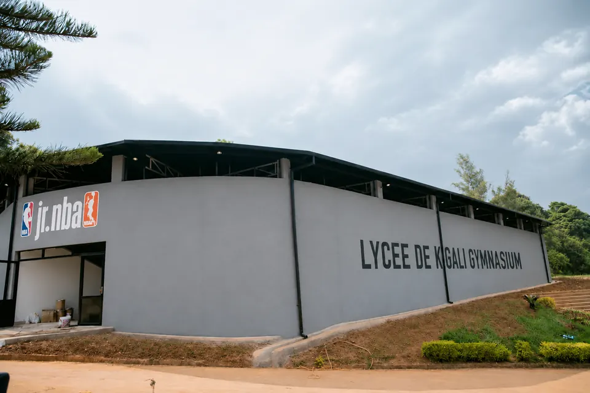

The LDK gymnasium
An indoor space for practice and competition.
The refurbished gymnasium was inaugurated in February 2023. The indoor court gives players a place to practise their skills, run drills and compete as a team.
Read about the gymnasium reopening →
